The real programme screen at 390px, from the draft pull request: one field on screen, the day as a tap, “Done when”, last week first, the readings, and My Blueprint. Test founder, test words. The skeleton · Try Level 01
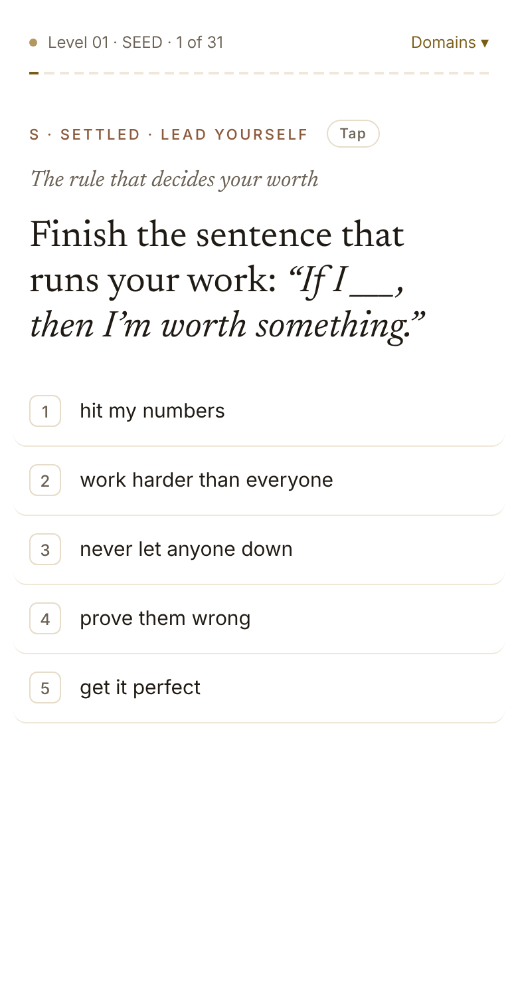
Level 01 opens: one tap, keys 1 to 5. The topic sits above the question.
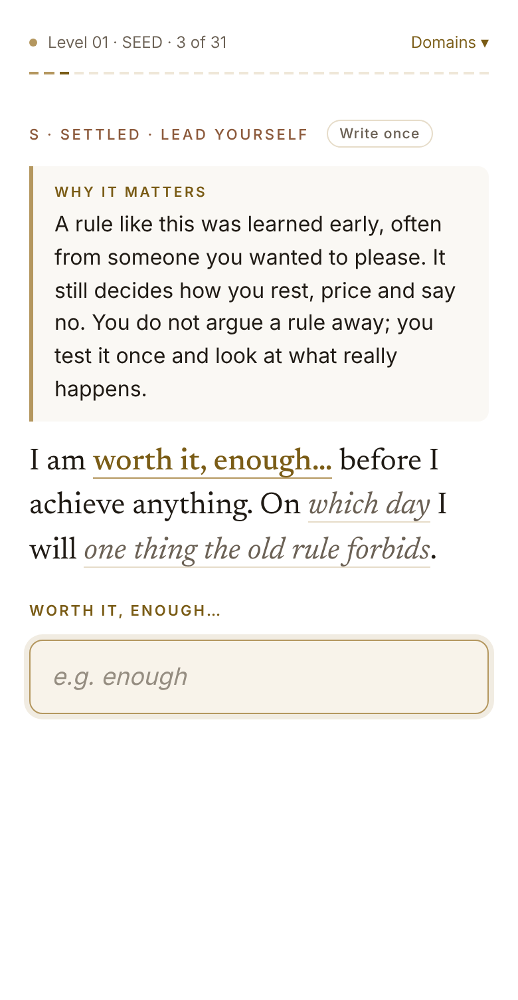
The first blank: “Why it matters” (Inform), then the sentence, one blank lit at a time.
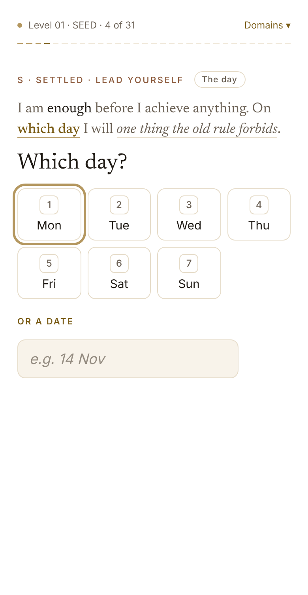
The day is a tap: seven chips, or a date.
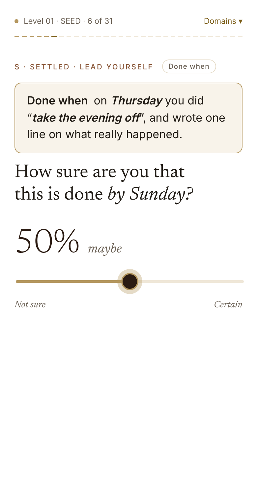
“Done when”, checkable on Sunday, then: how sure are you?
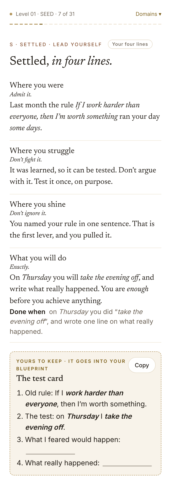
The four lines, “Done when” under “What you will do”, and what the founder keeps, filled with their words (Copy).
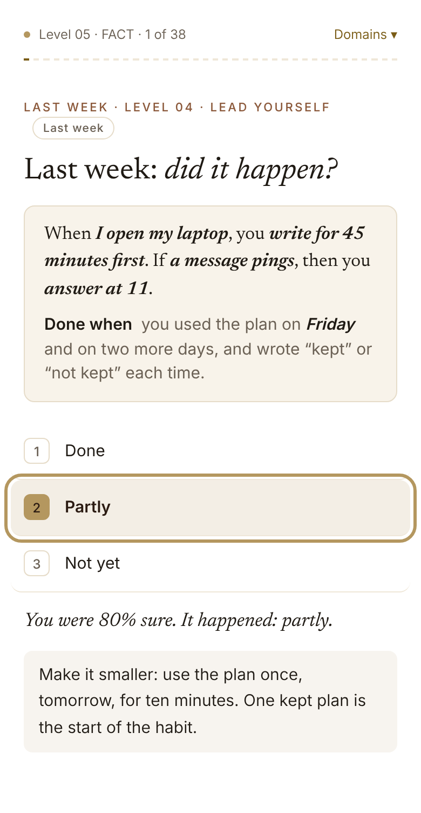
From Level 02: last week first. “Partly” shows what they estimated, and a smaller step.
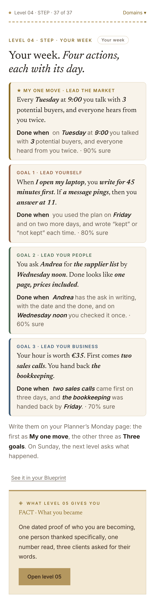
Your week: four actions, each with its day. The North Star’s weakest domain is the one move.
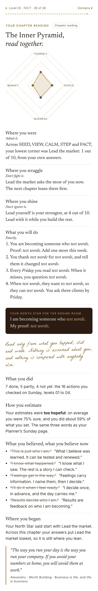
The chapter reading: what was done, how good the estimates were, old and new beliefs, where they began, his words.
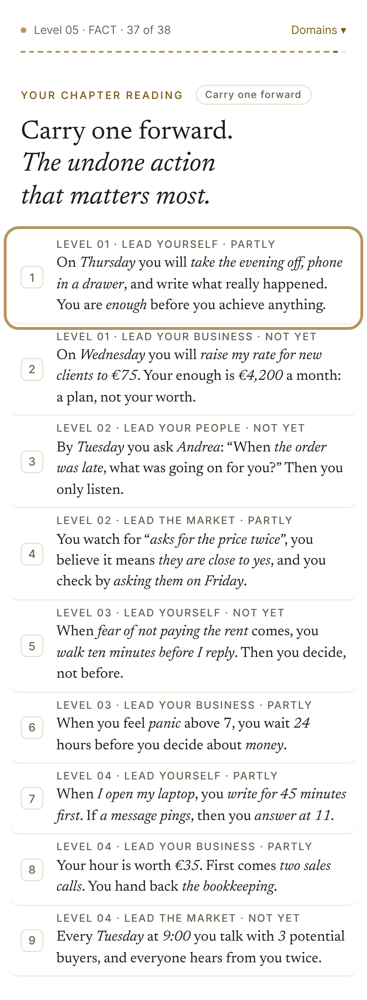
Carry one forward: the undone action that matters most.
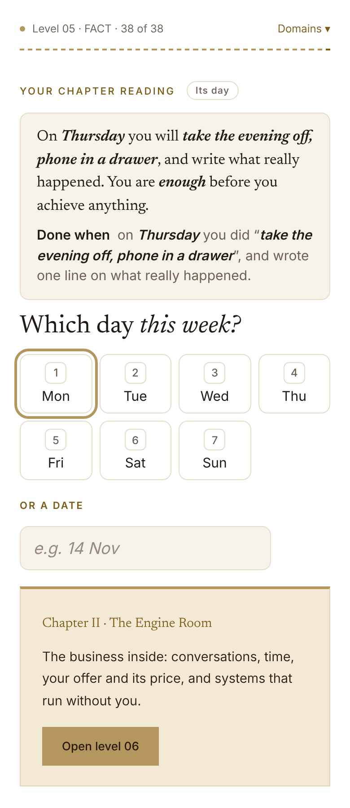
Its day, and the door to the next chapter.
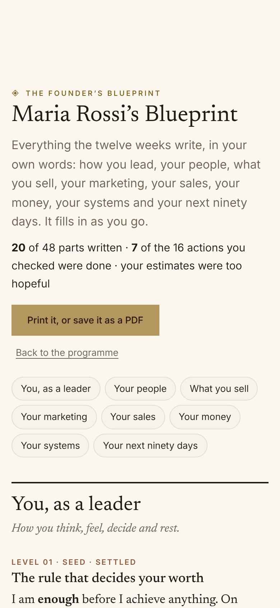
My Blueprint: the founder’s twelve weeks in eight parts, printable.
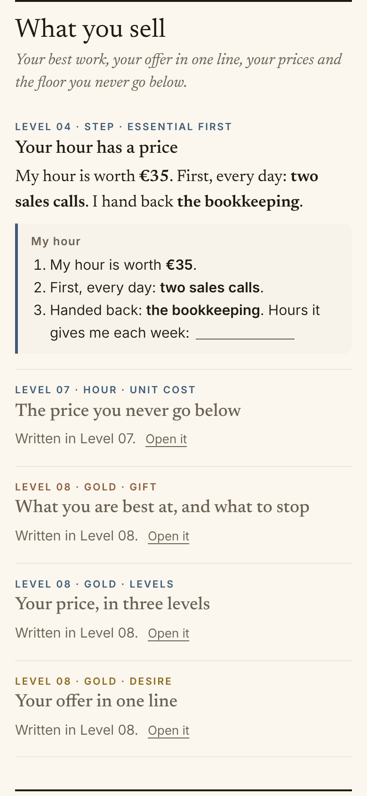
A part of the Blueprint: their own sentence and what they keep; parts not yet written link to their level.